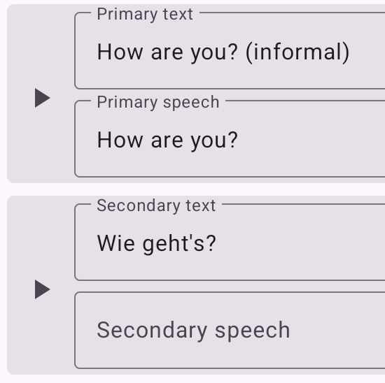

Getting Started
How it works
Learning is based on playing words and phrases using the Text-to-Speech (TTS) system. This requires text content that can be spoken aloud.
The core unit of learning is a Topic: a pair of text in the Primary language and its translation in the Secondary language.
Topics are grouped into Chapters, where you define which language is primary and which is secondary.
The Secondary part is optional — you can focus on pronunciation only, without translations.
Topics can also be grouped (for example, related or root words), but only a single nesting level is supported.
For better learning, the spoken text can differ from the text displayed on the screen. This is useful when the written text contains clarifications or notes.
Playlists
To start learning, you create a Playlist — add several chapters and choose their playback order. Once created, the playlist appears on the main screen and can be launched.
Settings
Settings allow you to control the length of pauses between topics, as well as internal pauses between word and translation.
You can also disable speech output entirely if you prefer to learn only by reading and focusing on spelling and translation.
Demo data
The app comes with a demo database. You can modify it freely, and if needed, reset it to its original state by clearing the app data.
Import & Export
The app supports import and export of:
- individual Chapters,
- entire Playlists,
- or the full database.
This makes it easy to share lessons with friends, create backups, or use the data for your own purposes.